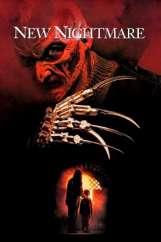

Country:United States, 112 minutes
Spoken languages:English
Genres:Horror, Mystery, Fantasy
Director(s):Wes Craven
Writer(s):Wes Craven
Video Codec:Unknown
Number: 870


Certification:R
Storyline:
A demonic force has chosen Freddy Krueger as its portal to the real world. Can Heather Langenkamp play the part of Nancy one last time and trap the evil trying to enter our world?
Cast:

Medium: Bluray,
Comments: Part of: Nightmare on Elm Street Collection
Loaned: No
Aspect ratio: Unknown